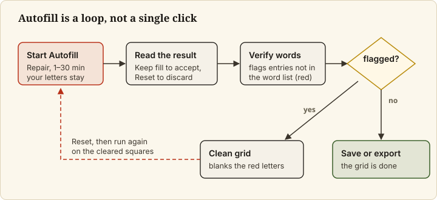
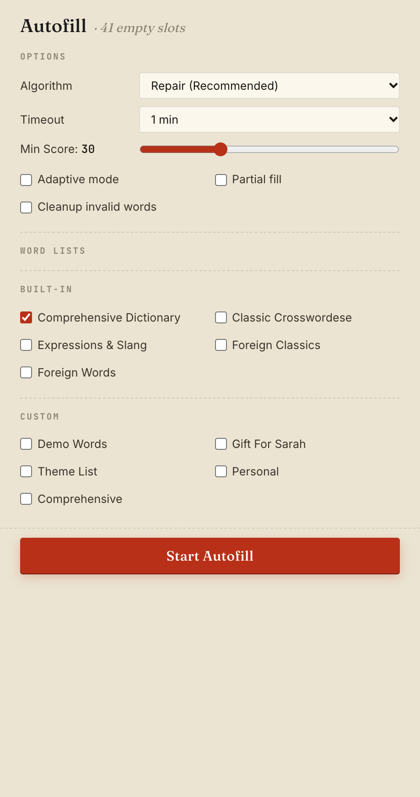
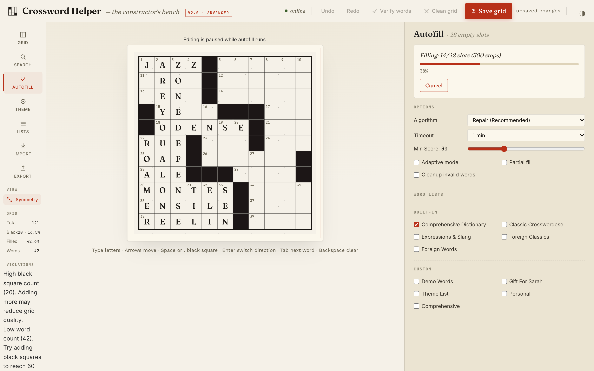
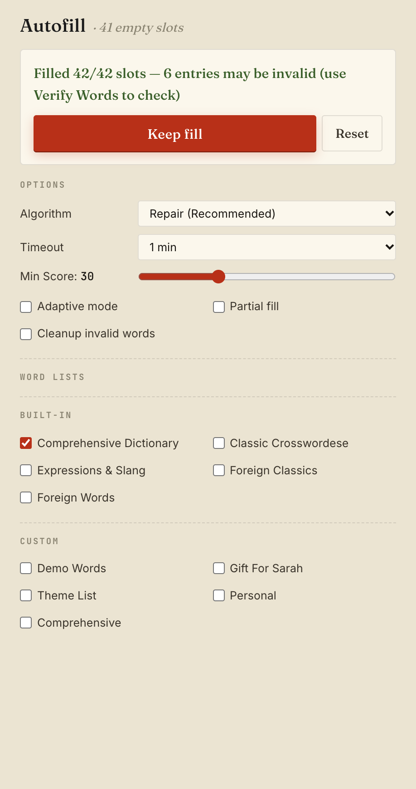

Autofill a grid
Goal
Let the app fill the empty squares of your grid with words from your word lists, then keep or discard the result. Autofill is known to be imperfect: it can finish with entries that are not valid words, and some settings can stop without changing the grid. This page shows how to run it and read what comes back.


Prerequisites
- A grid with black squares set and any words you want to keep already typed or placed (Set up the grid, Add theme words).
- At least one word list ticked (
Comprehensive Dictionaryis ticked by default).
Steps
1. Open Autofill and review the options
Click Autofill in the left rail. The heading shows how many slots are still empty (a slot is one across or down entry; a slot with some letters but not all of them still counts as empty). Leave the options on their defaults unless you have a reason to change them:


| Option | What it does | Default |
|---|---|---|
Algorithm |
Repair (Recommended), Hybrid (Beam + Repair), Beam Search, Classic CSP |
Repair (Recommended) |
Timeout |
How long a run may take: 1, 2, 5, 10 or 30 min | 5 min |
Min Score |
Minimum word score the fill may use, 0 to 100 in steps of 10 | 30 |
Adaptive mode |
unverified Lets the fill add black squares when it gets stuck; a Max adaptations slider (1 to 5) appears |
off, 3 |
Partial fill |
unverified Stops when stuck instead of backtracking hard | off |
Cleanup invalid words |
unverified After the fill, removes invalid words while keeping letters shared with valid crossing words | off |
| Word Lists | Which lists the fill may take words from; under Custom, a ticked list can be made the Priority theme list |
Comprehensive Dictionary |
Use Repair (Recommended). The README warns that with Beam Search or Classic CSP a run can stop with the
grid unchanged and no red cell (see Known Limitations).
unverified The descriptions of Adaptive mode, Partial fill and Cleanup invalid words come from the command-line
tool's help text; their effects were not measured for this page.
Raising Min Score limits the fill to higher-scoring words but makes a complete fill harder; at the top of
the scale a run on an open grid fills almost nothing.
2. Start the run
Click Start Autofill. The button is greyed out, with a hint under it, when no word list is ticked
(Select at least one word list) or when there is nothing left to fill (Clear some cells to run autofill
again). It is only shown while no result is open: after any outcome, click Reset before you start another
run.
While it runs, the grid shows Editing is paused while autofill runs., and the panel shows a progress bar
and Cancel. Wait for it to end, or click Cancel.


3. Read the result
The panel ends with one of these outcomes:
| Message | What happened | What you can do |
|---|---|---|
Successfully filled N/M slots! |
The fill completed with valid words; it is already in the grid | Click Reset, then carry on |
Filled N/M slots — K entries may be invalid (use Verify Words to check) (or some entries may need review in place of the count) |
Every square is filled, but some entries are not in the word list | Keep fill, or Reset |
Partial: N/M slots (P%) |
The run ended with squares still empty | Keep partial fill (N/M slots), or Reset |
Autofill could not fill around the highlighted letters. |
Letters already in the grid left no valid fill; those squares are marked red | Keep partial fill, or Reset, then change the red letters |
No word fits the highlighted letters. or The selected word lists have no words of length N. |
The run could not start usefully: a pattern fits no word in the chosen lists | Change the highlighted letters or tick another list |
Cancelled by user |
You clicked Cancel |
Reset; a Keep partial fill offer may appear if the run had made progress unverified |
No solution found |
The run found no fill | Reset unverified |
Autofill failed, or the message the backend gave |
The run failed | Reset unverified |
Lost contact with the autofill run. |
The app lost its connection to the run | Reset, then run again unverified |
Autofill was paused outside the app. |
Someone paused the run from the command line; the app has no pause control | Keep partial fill if offered, or Reset unverified |
unverified Rows marked unverified are read from the app's code (src/hooks/useAutofillMachine.js) and were not reproduced
for this page.
For the outcomes with a Keep button, the grid keeps showing the state from before the run until you click
Keep fill (or Keep partial fill). Reset closes the result without taking the fill.


Autofill does not change letters you typed or theme words you locked.
4. Check what you kept
Click Verify words in the top bar. Entries that are not in the word list are flagged and listed in a
message; see Check and clean a grid. Verify words checks only the shipped
Comprehensive Dictionary, so words that come only from a custom list you ticked are flagged too, and Clean
grid would blank them. To run again, click Reset, clear some squares if the grid is full, and click
Start Autofill; results differ from run to run.
Final Result
The grid is filled (or partly filled) with your choice of result kept, and Verify words tells you which
entries to look at again.
Next Steps
- Remove or fix invalid entries: Check and clean a grid.
- Every autofill control and its default: Web app reference.